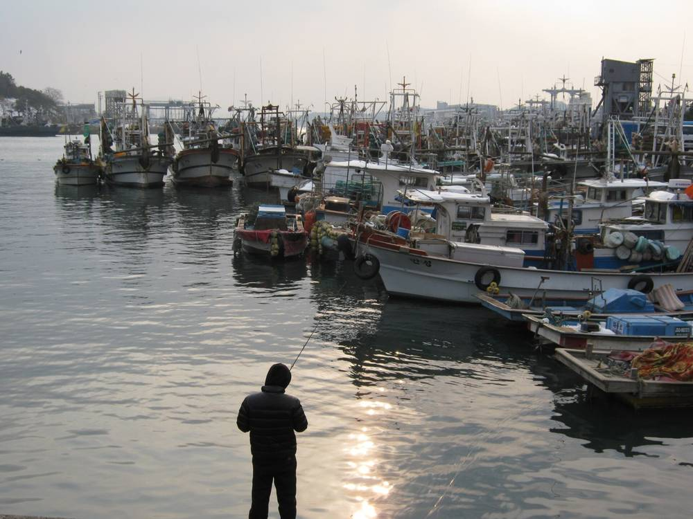

신안 해상풍력 11개 단지 3.7GW·22조2,000억 원 계획…시민대토론회서 "바다는 내주고 군민은 어디로"

2030년 말 첫 준공·2031년 이후 주민참여 이익공유 계획…목포는 신항 산업 기반에 3조4,380억 원, 어업보상과 어민 참여 방식이 쟁점으로
전남 신안 앞바다에 모두 3.7GW 규모의 해상풍력 11개 단지를 짓는 계획이 구체화되는 가운데, 5일 목포 신안비치호텔에서 열린 해상풍력 시민대토론회에서는 어업보상을 넘어 주민 몫을 어떻게 지킬지가 쟁점으로 떠올랐다. 이정수 신안군 신재생에너지국장이 내놓은 자료를 보면 신안 공유수면 일원 11개 단지의 사업비는 약 22조2,000억 원, 사업기간은 2025~2033년이며, 지난해 4월 3.2GW로 처음 지정된 집적화단지는 올해 5월 3.7GW로 넓어졌다. 신안군은 환경영향평가와 해상교통 안전진단을 거쳐 2030년 말 첫 준공을 추진하고, 2031년 이후 주민참여 이익공유를 시행할 계획이다. 목포시는 2026~2031년 약 3조4,380억 원을 들여 목포신항에 지원부두·배후단지(약 1,898억 원), 유지보수 특화기지(660억 원), 전문인력 양성(400억 원), 지원선박 국산화(490억 원) 등 산업 기반을 갖추겠다는 구상을 내놨다. 토론회 자료집에는 2017~2022년 신안군수협 계통출하 위판액의 약 94%를 연안·근해자망 어업이 차지한다는 분석이 실려, 조업구역이 바뀌면 특정 어업이 큰 영향을 받을 수 있다는 점이 지적됐다. 한 신안 지역 참석자는 "바다는 내주고 신안군민은 갈 길이 어디 있느냐"며 어업보상에 그치지 말고 주민의 장기 생계 기반과 새 산업 이익을 확보할 방안을 군이 마련하라고 촉구했고, 토론 진행자는 수산업과의 공존을 주제로 추가 논의 자리를 마련하겠다고 밝혔다.
시민에너지 관점
신안 바다 11개 단지에 약 22조2,000억 원이 들어가는데 주민 몫은 아직 '2031년 이후 이익공유 시행'이라는 한 줄뿐이고, 위판액의 약 94%를 자망 어업에 기대는 어민들에게 그 한 줄은 답이 되지 못한다. 이렇게 큰 바다 사업을 주민이 감당할 수 있겠느냐는 우려가 있지만, 덴마크 코펜하겐 앞바다의 미델그룬덴 해상풍력단지는 시민 협동조합이 지분 절반을 가진 채 운영되고 있다. 보상은 한 번 받고 끝나지만 지분은 발전소가 돌아가는 내내 배당과 의결권으로 남기 때문에, 어민과 군민이 처음부터 출자자로 들어가야 바다를 내준 대가가 지역에 머문다. 신안군과 정부는 집적화단지 협의 단계에서 주민·어민 지분의 최소 비율과 출자 방식부터 정해 공개해야 한다.
출처: 폴리뉴스 2026-11-05 강성율 원문 보기
新安の洋上風力11団地3.7GW・22兆2,000億ウォン計画…市民大討論会で「海を差し出して郡民はどこへ」
2030年末に初の竣工、2031年以降に住民参加の利益共有を計画…木浦は新港の産業基盤に3兆4,380億ウォン、漁業補償と漁民の参加方式が争点に
全羅南道新安郡の沖合に計3.7GW規模の洋上風力発電11団地を建設する計画が具体化するなか、5日に木浦市の新安ビーチホテルで開かれた洋上風力市民大討論会では、漁業補償を超えて住民の取り分をどう守るかが争点に浮上した。イ・ジョンス新安郡新再生エネルギー局長が示した資料によると、新安の公有水面一帯11団地の事業費は約22兆2,000億ウォン、事業期間は2025～2033年で、昨年4月に3.2GWで初めて指定された集積化団地は今年5月に3.7GWへ拡大された。新安郡は環境影響評価と海上交通安全診断を経て2030年末の初竣工を目指し、2031年以降に住民参加型の利益共有を実施する計画だ。木浦市は2026～2031年に約3兆4,380億ウォンを投じ、木浦新港に支援埠頭・背後団地（約1,898億ウォン）、維持補修の特化拠点（660億ウォン）、専門人材の育成（400億ウォン）、支援船の国産化（490億ウォン）などの産業基盤を整える構想を示した。討論会の資料集には、2017～2022年の新安郡水協の系統出荷による水揚げ額の約94%を沿岸・近海の刺し網漁業が占めるとの分析が載り、操業区域が変われば特定の漁業が大きな影響を受けかねないと指摘された。新安地域の参加者の一人は「海を差し出して新安郡民の行き場はどこにあるのか」と述べ、漁業補償にとどまらず住民の長期的な生活基盤と新たな産業利益を確保する方策を郡が用意するよう求め、討論の進行役は水産業との共存をテーマに追加の議論の場を設けると明らかにした。
市民エネルギーの視点
新安の海の11団地に約22兆2,000億ウォンが投じられるのに、住民の取り分はまだ「2031年以降に利益共有を実施」という一行だけで、水揚げ額の約94%を刺し網漁に頼る漁民にとって、その一行は答えにならない。これほど大きな海の事業を住民が担えるのかという懸念もあるが、デンマーク・コペンハーゲン沖のミドルグルンデン洋上風力発電所は、市民協同組合が持ち分の半分を保有したまま運営されている。補償は一度受け取れば終わりだが、持ち分は発電所が動く限り配当と議決権として残るため、漁民と郡民が最初から出資者として加わってこそ、海を差し出した対価が地域にとどまる。新安郡と政府は集積化団地の協議段階で、住民・漁民の持ち分の最低比率と出資方式をまず決めて公開すべきだ。
出典: ポリニュース 2026-11-05 カン・ソンユル 原文を読む
新安海上风电11个园区3.7GW、22.2万亿韩元计划…市民大讨论会上发问"把海交出去，郡民何去何从"
计划2030年底首批竣工、2031年后实施居民参与收益共享…木浦新港产业基础投入3.438万亿韩元，渔业补偿与渔民参与方式成焦点
韩国全罗南道新安郡近海建设总规模3.7GW、共11个园区的海上风电计划正逐步具体化。5日在木浦新安海滩酒店举行的海上风电市民大讨论会上，如何在渔业补偿之外保障居民应得的份额成为焦点。根据新安郡新再生能源局长Lee Jeong-su提交的资料，新安公有水面一带11个园区的项目费用约为22.2万亿韩元（22兆2,000亿韩元），项目期为2025~2033年；去年4月首次以3.2GW获指定的集约化园区，今年5月扩大为3.7GW。新安郡计划经过环境影响评价和海上交通安全诊断，力争2030年底实现首批竣工，并在2031年以后实施居民参与收益共享。木浦市则提出，2026~2031年投入约3.438万亿韩元（3兆4,380亿韩元），在木浦新港建设支援码头和后方园区（约1,898亿韩元）、运维专业基地（660亿韩元）、专业人才培养（400亿韩元）以及支援船舶国产化（490亿韩元）等产业基础。讨论会资料集收录的分析显示，2017~2022年新安郡水协系统出货的拍卖额中，沿岸和近海刺网渔业约占94%，并指出作业海域一旦改变，特定渔业可能受到较大冲击。一位新安当地与会者发问："把海交出去，新安郡民的路在哪里？"他敦促郡政府不要只停留在渔业补偿，而要拿出确保居民长期生计基础和新产业收益的方案；讨论主持人表示，将以水产业与风电共存为主题另行安排讨论。
市民能源视角
新安海域11个园区将投入约22.2万亿韩元，而居民的份额目前只有"2031年以后实施收益共享"这一行字，对拍卖额约94%依赖刺网渔业的渔民来说，这一行字算不上答案。有人担心居民能否承担如此大规模的海上项目，但丹麦哥本哈根近海的米德尔格伦登海上风电场，就是由市民合作社持有一半股份运营至今。补偿拿一次就结束了，股份却会在电站运转期间一直以分红和表决权的形式留下，只有渔民和郡民从一开始就作为出资者加入，交出大海换来的回报才会留在当地。新安郡和政府应在集约化园区协商阶段，先确定并公开居民和渔民持股的最低比例与出资方式。
来源: Polinews 2026-11-05 Kang Seong-yul 查看原文
Shinan plans 3.7GW offshore wind across 11 sites at 22.2 trillion won; at citizens' forum, "We give up the sea, so where do residents go?"
First completion targeted for end-2030 and resident benefit-sharing after 2031; Mokpo plans 3.438 trillion won for port industry base, while fisheries compensation and fishers' participation become the main issues
As plans firm up for 11 offshore wind sites totalling 3.7GW off Shinan County in South Jeolla Province, a citizens' forum on offshore wind held on 5 November at the Shinan Beach Hotel in Mokpo turned on how residents' share can be protected beyond fisheries compensation. According to material presented by Lee Jeong-su, head of Shinan County's renewable energy bureau, the 11 sites in Shinan's public waters carry a project cost of about 22.2 trillion won and a project period of 2025 to 2033, and the cluster zone first designated at 3.2GW in April last year was expanded to 3.7GW in May this year. The county aims for the first completion at the end of 2030 after environmental impact assessments and maritime traffic safety reviews, and plans to introduce resident-participation benefit-sharing after 2031. Mokpo City set out a plan to spend about 3.438 trillion won from 2026 to 2031 building an industrial base at Mokpo New Port, including support quays and hinterland (about 189.8 billion won), a specialised maintenance hub (66 billion won), workforce training (40 billion won) and domestic production of support vessels (49 billion won). The forum's briefing book included an analysis showing that coastal and offshore gillnet fishing accounted for about 94% of auction sales shipped through the Shinan fisheries cooperative from 2017 to 2022, pointing out that changes to fishing grounds could hit particular fisheries hard. "We give up the sea, and where are Shinan's residents supposed to go?" asked one local participant, who urged the county to go beyond compensation and secure residents' long-term livelihoods and a share of new industrial gains, while the moderator said a further discussion on coexistence with the fishing industry would be arranged.
Citizen Energy View
About 22.2 trillion won is set to flow into 11 sites in Shinan's waters, yet residents' share so far amounts to a single line, "benefit-sharing after 2031", which is no answer for fishers who rely on gillnetting for about 94% of their catch value. Some doubt that residents could take part in a sea project of this size, but the Middelgrunden offshore wind farm off Copenhagen in Denmark has long operated with a citizens' cooperative owning half of it. Compensation is paid once and is gone, while a stake keeps paying dividends and carrying votes for as long as the turbines turn, so fishers and residents must come in as investors from the start if the price of giving up the sea is to stay in the community. Shinan County and the government should set and publish a minimum share for residents and fishers, and how they can invest, at the cluster-zone consultation stage.
Source: Polinews 2026-11-05 Kang Seong-yul Read the original